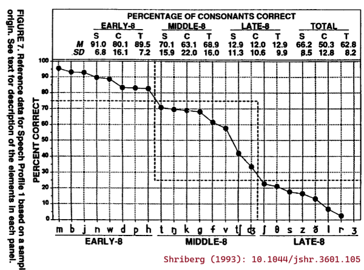
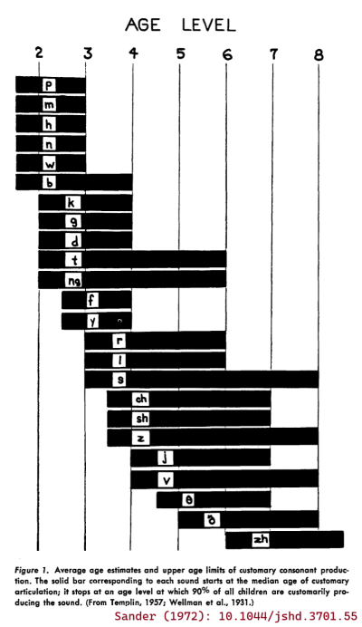

Acquisition and developmental descriptions of consonants and vowels
Source:R/data.R
data_acq_consonants.RdThis package provides dataframes of information about the consonants and
vowels in American English. The following datasets collect acquisition
(acq) features which (try to) characterize the expected acquisition or
speech-motor difficulty of speech sounds. See also
data_features_consonants.
Format
An object of class tbl_df (inherits from tbl, data.frame) with 24 rows and 16 columns.
An object of class tbl_df (inherits from tbl, data.frame) with 17 rows and 8 columns.
Details
Consonant acquisition features
data_acq_consonants provides the following features:
knitr::kable(data_acq_consonants)| phone | cmubet | wiscbet | cm2020_90_age_mean | cm2020_90_age_sd | cm2020_90_age_min | cm2020_90_age_max | cm2020_90_num_studies | cm2020_90_stage | s93_eights | k1992_set | kd2018_complexity | hml84_frequency | hml84_log10fpm | mhr82_frequency | mhr82_log10fpm |
| p | P | p | 33.2 | 6.9 | 24 | 48 | 12 | early | early | 1 | 3 | 50694 | 4.274964 | 14851 | 4.230197 |
| b | B | b | 31.4 | 7.8 | 24 | 48 | 13 | early | early | 2 | 4 | 51831 | 4.284598 | 18027 | 4.314365 |
| t | T | t | 38.5 | 9.2 | 24 | 60 | 13 | early | middle | 3 | 5 | 188536 | 4.845402 | 69108 | 4.897970 |
| d | D | d | 35.7 | 6.7 | 24 | 48 | 13 | early | early | 2 | 4 | 102205 | 4.579480 | 47838 | 4.738214 |
| k | K | k | 37.7 | 7.3 | 24 | 48 | 13 | early | middle | 2 | 4 | 73250 | 4.434816 | 25462 | 4.464334 |
| g | G | g | 36.8 | 6.6 | 24 | 48 | 13 | early | middle | 2 | 4 | 19422 | 3.858302 | 15789 | 4.256796 |
| tʃ | CH | tsh | 53.5 | 10.7 | 36 | 72 | 12 | middle | middle | 4 | 6 | 17147 | 3.804196 | 3149 | 3.556614 |
| dʒ | JH | dzh | 51.0 | 11.8 | 36 | 72 | 13 | middle | middle | 4 | 6 | 13220 | 3.691239 | 3015 | 3.537729 |
| m | M | m | 33.2 | 6.7 | 24 | 48 | 13 | early | early | 1 | 3 | 75850 | 4.449963 | 25799 | 4.470044 |
| n | N | n | 33.1 | 7.4 | 24 | 48 | 13 | early | early | 1 | 3 | 204939 | 4.881633 | 68331 | 4.893059 |
| ŋ | NG | ng | 40.3 | 10.8 | 24 | 55 | 10 | early | middle | 3 | 5 | 13692 | 3.706475 | 9102 | 4.017578 |
| f | F | f | 38.3 | 6.3 | 24 | 48 | 13 | early | middle | 2 | 4 | 51526 | 4.282034 | 10731 | 4.089082 |
| v | V | v | 50.8 | 10.8 | 36 | 66 | 12 | middle | middle | 4 | 6 | 66490 | 4.392764 | 8753 | 4.000598 |
| θ | TH | th | 77.0 | 7.4 | 72 | 96 | 10 | late | late | 4 | 6 | 18300 | 3.832459 | 4337 | 3.695631 |
| ð | DH | dh | 69.0 | 11.3 | 54 | 96 | 12 | late | late | 4 | 6 | 108602 | 4.605846 | 35995 | 4.614683 |
| s | S | s | 51.3 | 16.3 | 24 | 84 | 12 | middle | late | 4 | 6 | 114733 | 4.629696 | 33752 | 4.586741 |
| z | Z | z | 56.8 | 14.3 | 30 | 84 | 11 | middle | late | 4 | 6 | 54454 | 4.306038 | 24027 | 4.439141 |
| ʃ | SH | sh | 55.0 | 10.5 | 36 | 72 | 12 | middle | late | 4 | 6 | 21756 | 3.907587 | 4844 | 3.743645 |
| ʒ | ZH | zh | 70.7 | 12.2 | 60 | 84 | 3 | late | late | 4 | 6 | 1488 | 2.742611 | 100 | 2.058441 |
| h | HH | h | 35.0 | 7.0 | 24 | 48 | 13 | early | early | 1 | 3 | 61905 | 4.361734 | 18896 | 4.334811 |
| l | L | l | 53.8 | 10.4 | 24 | 60 | 12 | middle | late | 3 | 5 | 98287 | 4.562504 | 29343 | 4.525946 |
| r | R | r | 66.6 | 18.6 | 30 | 96 | 12 | late | late | 3 | 5 | 121548 | 4.654756 | 29534 | 4.528764 |
| w | W | w | 35.2 | 6.8 | 24 | 48 | 13 | early | early | 1 | 3 | 60251 | 4.349972 | 25171 | 4.459342 |
| j | Y | j | 45.8 | 11.0 | 30 | 60 | 13 | early | early | 2 | 4 | 16510 | 3.787755 | 8544 | 3.990103 |
Description of each column:
- phone
phone in IPA
- cmubet
phone in the CMU alphabet
- wiscbet
phone in an older system used by our lab
- cm2020_90_age_mean, cm2020_90_age_sd, cm2020_90_age_min, cm2020_90_age_max
Age of acquisition statistics reported by Crowe & McLeod (2020). Statistics are the mean, SD, min and max age (in months) when children reached 90% accuracy on a consonant.
- cm2020_90_num_studies
Number of studies used by Crowe & McLeod (2020) to compute the corresponding statistics.
- cm2020_90_stage
Developmental stage assigned to the consonant by Crowe & McLeod (2020). Sounds with an
age_meanbefore 48 months areearly, before 60 months aremiddle, and of 60 or older arelate.- s93_eights
Developmental stage of Shriberg (1993)—that is, the
early8,middle8 andlate8 consonants.- k1992_set
Developmental set from Kent (1992). Sets corresponds to the age of 90% mastery in Sander (1972): Set 1 is mastered at age 3-years-old, Set 2 at age 4, Set 3 at age 6, and Set 4 at a later age.
- kd2018_complexity
Phonetic complexity scores from Kuruvilla-Dugdale et al. (2018). This scoring system is based on the development description of vowels and consonants in Kent (1992). The scores for individual segments range from 1 for the earliest vowels to 6 for the last-acquired consonants. Under this system, assign a score to each part of a syllable (onset, nucleus, coda) using these scores when the syllable part is a single segment and using scores of 7 and 8 for 2-consonant and 3-consonant clusters, respectively.
Vowel acquisition features
data_acq_vowels provides the following features:
knitr::kable(data_acq_vowels)| phone | cmubet | wiscbet | kd2018_complexity | hml84_frequency | hml84_log10fpm | mhr82_frequency | mhr82_log10fpm |
| i | IY | i | 2 | 82430 | 4.486093 | 28537 | 4.513850 |
| ɪ | IH | I | 4 | 195348 | 4.860817 | 43999 | 4.701884 |
| eɪ | EY | eI | 4 | 38966 | 4.160694 | 16679 | 4.280611 |
| ɛ | EH | E | 3 | 73107 | 4.433967 | 31322 | 4.554291 |
| æ | AE | ae | 4 | 106838 | 4.598734 | 40290 | 4.663639 |
| ʌ | AH | ^ | 1 | 44555 | 4.218904 | 22826 | 4.416871 |
| ə | AH | 4 | 1 | 231568 | 4.934686 | 38977 | 4.649250 |
| u | UW | u | 2 | 57320 | 4.328314 | 19188 | 4.341471 |
| ʊ | UH | U | 4 | 13557 | 3.702171 | 4288 | 3.690696 |
| oʊ | OW | oU | 2 | 61954 | 4.362077 | 17330 | 4.297240 |
| ɔ | AO | c | 3 | 26110 | 3.986815 | 12004 | 4.137767 |
| ɑ | AA | @ | 1 | 36589 | 4.133358 | 17326 | 4.297140 |
| aʊ | AW | @U | 3 | 16079 | 3.776267 | 7377 | 3.926321 |
| aɪ | AY | @I | 3 | 39275 | 4.164124 | 23807 | 4.435146 |
| ɔɪ | OY | cI | 3 | 2140 | 2.900422 | 744 | 2.930014 |
| ɝ | ER | 3^ | 5 | 17048 | 3.801681 | 4227 | 3.684474 |
| ɚ | ER | 4^ | 5 | 41966 | 4.192906 | 10676 | 4.086850 |
- phone
phone in IPA
- cmubet
phone in the CMU alphabet
- wiscbet
phone in an older system used by our lab
- kd2018_complexity
Phonetic complexity scores from Kuruvilla-Dugdale et al. (2018). This scoring system is based on the development description of vowels and consonants in Kent (1992). The scores for individual segments range from 1 for the earliest vowels to 6 for the last-acquired consonants. Under this system, assign a score to each part of a syllable (onset, nucleus, coda) using these scores when the syllable part is a single segment and using scores of 7 and 8 for 2-consonant and 3-consonant clusters, respectively.
- wiscbet
phone in an older system used by our lab
Crowe and McLeod (2020) norms for English consonant acquisition
Crowe and McLeod (2020, below as the cm2020_ variables) provides a
systematic review and summary statistics for age of acquisition norms for
English consonants. They scoured the literature of acquisition ages for
individual consonants and computed summary statistics on them. They
considered just accuracy of sounds when produced in single words. Their
sources include a mix of a journal articles and norms for articulation
assessments. They do not weight statistics from individual studies by sample
size or sampling procedure.
I prepared the Crowe and McLeod (2020) data by copying the relevant numbers from their Table 2 making the following changes: 1) rounding mean and SD values to 1 decimal point (3 days for ages in months), 2) dropping /ʍ/, 3) using /r/, /g/, /tʃ/, /dʒ/ for IPA characters instead of the specialized characters used in the article.
The early 8, middle 8 and late 8 (Shriberg, 1993)
The English consonants are often broken down into three developmental classes, based on Shriberg (1993):
Early 8: m b j n w d p h
Middle 8: t ŋ k g f v tʃ dʒ,
Late 8: ʃ θ s z ð l r ʒ
This classification is included as the s93_eights column.
From these names alone, we might interpret these classes such that sounds in the Early 8 would be acquired before the ones in the Middle 8, and likewise that the Middle 8 would be acquired before the Late 8. But these classes were not created by examining patterns of typical consonant acquisition.
For some context, Shriberg (1993) introduces the Early 8, Middle 8, and Late 8 data by describing the following panel of the article's Figure 7:

About which, Shriberg (1993) says: "The values for this trend, which is a profile of consonant mastery, were taken from a group of 64 3- to 6-year-old speech-delayed children Shriberg, Kwiatkowski, & Gruber, 1992). Severity of involvement of the 24 English consonants is represented as the percentage correct for each consonant sorted in decreasing order from left to right. Notice that the most obvious breaks in this function allow for a division of the 24 consonants into three groups of eight sounds termed the Early-8, averaging over 75% correct, the Middle-8, averaging 25%-75% correct, and the Late-8, including consonants averaging less than 25% correct in continuous conversational speech (/ʒ/ is infrequently represented in young, speech-delayed children's spontaneous conversational speech)."
So, there were 64 3–6-year-old children with speech delays, and consonant sounds were divided into three classes based on how often these children produced the sounds correctly on average in a conversational speech sample. This classification is not so much a measure of the relative ordering of speech sound development as it is the relative difficulty of these sounds for children with a speech delay of unknown origin. It would be more appropriate to replace the levels of Early/Middle/Late with Easy/Medium/Hard.
Phonetic complexity (Kent, 1992; Kuruvilla-Dugdale et al. 2018)
Phonetic complexity measures (k1992_set and kd2018_complexity)
assign the speech sounds different complexity levels based on biological
principles outlined in Kent (1992). Because Kent (1992) is a book
chapter that is not floating around online, it's worthwhile to review
the provenance of these complexity measures. In short, Kent (1992) applied
interpreted consonant and vowel development data in terms of their
motor demands.
Sander (1972) set out to construct a set of developmental norms for typical consonant acquisition in English. His big idea was to include the median age of acquisition as well as the 90th percentile age of acquisition. The median can tell us something about the average acquisition of the speech sounds, and the 90th percentile can set a benchmark for delayed acquisition. There are some quirks of the methodology. First, Sander (1972) was targeting "customary articulation" which was defined using production accuracy average across word positions. So, the age of 50% customary articulation for /t/ is the earliest age when the average of word-initial accuracy, word-medial accuracy and word-final accuracy is greater than 50%. Second, the norms for this study were created by augmenting data from 3–8-year-olds (Templin, 1957; n = 480) with some earlier data for 2-year-olds (Wellman et al. 1931; n = 15).
Sander (1972) presented these acquisition norms in the following figure:

Kent (1992) aimed to explain the course of English sound development in terms of biological and motoric principles. He examined the ages of 90% acquisition from Sander (1972)—that is, the right edges of the bars in the previous figure—and observed that /p m n w h/ are mastered at age 3, /b d k g j f/ at age 4, /t ŋ r l/ at age 6 and /s z ʃ ʒ v θ ð tʃ dʒ/ after age 7. He then described motoric demands in each of these sets of sounds. I'll paraphrase:
Set 1 requires fast "ballistic" movements for stops /p m n/, slow "ramp" movements for /w h/, velopharyngeal control for oral-nasal contrast, laryngeal control for voicing contrast.
Set 2 adds more stops /b d k g/ and another ramp /j/ and a new place of articulation (velars), but also requires "fine force regulation for frication" for /f/.
Set 3 adds more stops /t ŋ/, but also requires tongue "bending" for /r/ and /l/.
Set 4 adds more lingual fricatives /s z ʃ ʒ θ ð/ which require tongue bending and fine force control along with /v tʃ dʒ/. Kent does not characterize the motor demands for the affricates /tʃ dʒ/.
Let's pause for a moment and observe that this breakdown is just an attempt to describe the Sander (1972) norms, and it is somewhat underdeveloped. For example, why is /t/ in Set 3 but /d/ in Set 2? It is not answered here, but I think this late mastery is an artefact of Sander's requirement of 90% accuracy averaging over the three word-positions. The medial and final productions of /t/ might require allophonic variation in /t/ (e.g., flapping or glottalization), so mastery of /t/ would require different motor gestures and some phonological knowledge on the part of the child. But in Kent's description /t/ is a later-mastered ballistic movement.
Still, the main point of Kent's description, I think, is that lingual (tongue) consonants are more difficult. Elsewhere in the chapter, Kent (1992) describes how the tongue is a "muscular hydrostat" like an elephant trunk, and bending a hydrostat requires coordination of different muscle directions:
"Gaining motor control over a hydrostat presents some special problems to the young child learning speech. For one, bending the hydrostat is unlike bending a jointed structure such as a finger. The tongue has no joints per se; it flexes by appropriate contraction of its three-dimensional network of intrinsic longitudinal, vertical, and transverse fibers. Bending a hydrostat requires that muscle fibers be shortened on one aspect simultaneously with a resistance to a change in diameter (Smith and Kier 1989). If the diameter change is not resisted, then the hydrostat will shorten on one side but will not bend. To use the tongue in speech, the child must learn to control the tongue to meet skeletal, movement, and shaping requirements, often simultaneously. These special characteristics of the tongue may well play a role in vowel and consonant mastery."
Kim and colleagues (2010) applied these developmental sets (k1992_set) as
articulatory complexity levels while
examining consonant errors in dysarthric speech. They then asked
questions such as whether more complex consonants had more consonant
errors than less complex ones (yes) or whether lower intelligibility
speakers made more complexity-reducing consonant substitutions than
higher intelligibility speakers (apparently so). Examining the speech
of 5-year-olds, Allison and Hustad (2014) later used these complexity
levels as a way to score the phonetic complexity of sentences. They
assigned consonants 1–5 scores (the 1–4 complexity levels with a score
of 5 for consonants clusters), and summed up the scores to provide a
complexity score for a sentence. Three of the eight 5-year-olds with
dysarthria showed a negative effect of sentence complexity on
intelligibility.
Kent (1992) also described the yearly developmental progression of vowels. I'll paraphrase again:
By age 1: Infants produce vocants (vowel precursors) which correspond to the low-front, central and low-back vowels /æ ɛ ʌ ə ɑ/. Thus, the tongue only moves in the anterior-posterior direction (i.e., there is limited up-down movement).
By age 2: Toddlers produce the "maximally dissimilar" corner vowels /i u ɑ/ and produce /o/ and the central vowels /ʌ ə/.
By age 3: Children incorporate two lower vowels /ɛ ɔ/ and the diphthongs /aɪ aʊ ɔɪ/ which require gliding movements.
By age 4: Children incorporate the remaining non-rhotic vowels /ʊ ɪ e æ/. The appearance of the front vowels suggests that tongue-jaw coordination is a relatively late motor achievement. (/i/ appears earlier because its extreme height is easy.)
Lastly: Children incorporate /ɚ ɝ/ last because these r-colored vowels require tongue bending.
Kuruvilla-Dugdale and colleagues (2018) used this description to
incorporate vowels into the phonetic complexity scale
(kd2018_complexity). The /ʌ ə ɑ/ vocants from age 1 and the vowels
from age 2 mark the bottom of the complexity scale. The vowels that are
acquired at ages 3, 4 and afterwards are assigned to the consonant
complexity levels with the same age of mastery. Finally, consonant
clusters serve as the ceiling for the scale:
Table: Phonetic complexity scores from Kuruvilla-Dugdale et al. (2018).
| kd2018_complexity | consonants | vowels |
| 1 | ʌ ə ɑ | |
| 2 | i u oʊ | |
| 3 | p m n h w | ɛ ɔ aʊ aɪ ɔɪ |
| 4 | b d k g f j | ɪ eɪ æ ʊ |
| 5 | t ŋ l r | ɝ ɚ |
| 6 | tʃ dʒ v θ ð s z ʃ ʒ | |
| 7 | 2-consonant clusters | |
| 8 | 3-consonant clusters |
It is not clear how to apply this scale, so my approach has been to break words into subsyllabic units and assign scores to the syllable onsets, nucleui and codas in each word. For example, "jump" is /dʒ/ + /ʌ/ + /mp/ so it would have complexity of 6 + 1 + 7 = 14, and "jumper" includes a syllable break between the cluster, so it would have a score 6 + 1 + 1 + 1 + 5 = 14.
Kuruvilla-Dugdale and colleagues (2018) used this scoring system to compare intelligibility for low complexity versus high complexity words. For example, for speakers with ALS and mild dysarthria, there was statistically clear reduction in intelligibility for high complexity words but not for low complexity words. I applied this scoring system on single-word intelligibility in children's speech (Mahr & Hustad, 2023). There was a probable but not statistically clear negative effect of complexity on intelligibility over and above the effects of age, word frequency and word neighborhood competition. (Regrettably, I coded the one consonant cluster in the word list with a complexity of 8 instead of 7, but otherwise this is the approach.)
References
Allison, K. M., & Hustad, K. C. (2014). Impact of sentence length and phonetic complexity on intelligibility of 5-year-old children with cerebral palsy. International Journal of Speech-Language Pathology, 16(4), 396–407. https://doi.org/10.3109/17549507.2013.876667
Crowe, K., & McLeod, S. (2020). Children’s English Consonant Acquisition in the United States: A Review. American Journal of Speech-Language Pathology, 29(4), 2155–2169. https://doi.org/10.1044/2020_AJSLP-19-00168
Kent, R. D. (1992). The Biology of Phonological Development. In C. A. Ferguson, L. Menn, & C. Stoel-Gammon (Eds.), Phonological development: Models, research, implications (pp. 65–90). York Press.
Kim, H., Martin, K., Hasegawa-Johnson, M., & Perlman, A. (2010). Frequency of consonant articulation errors in dysarthric speech. Clinical Linguistics and Phonetics, 24(10), 759–770. https://doi.org/10.3109/02699206.2010.497238
Kuruvilla-Dugdale, M., Custer, C., Heidrick, L., Barohn, R., & Govindarajan, R. (2018). A Phonetic Complexity-Based Approach for Intelligibility and Articulatory Precision Testing: A Preliminary Study on Talkers With Amyotrophic Lateral Sclerosis. Journal of Speech, Language, and Hearing Research, 61(9), 2205–2214. https://doi.org/10.1044/2018_JSLHR-S-17-0462
Mahr, T. J., & Hustad, K. C. (2023). Lexical Predictors of Intelligibility in Young Children’s Speech. Journal of Speech, Language, and Hearing Research, 66(8S), 3013–3025. https://doi.org/10.1044/2022_JSLHR-22-00294
Sander, E. K. (1972). When are Speech Sounds Learned? Journal of Speech and Hearing Disorders, 37(1), 55–63. https://doi.org/10.1044/jshd.3701.55
Shriberg, L. D. (1993). Four New Speech and Prosody-Voice Measures for Genetics Research and Other Studies in Developmental Phonological Disorders. Journal of Speech, Language, and Hearing Research, 36(1), 105–140. https://doi.org/10.1044/jshr.3601.105